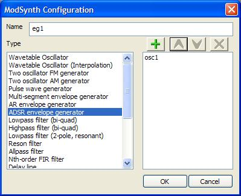
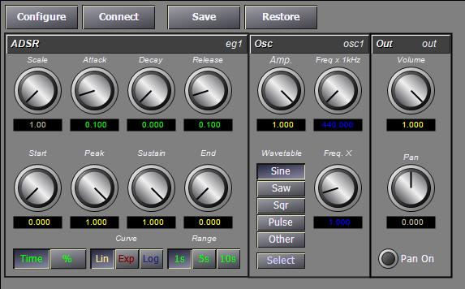
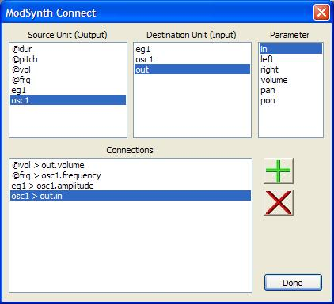

Unlike the other instruments in BasicSynth, the Modular Instrument does not define a patch of generators. Instead, you must create the patch manually by configuring a set of unit generators and connections between generators. This allows you to create a patch specific to your needs - as few or as many generators as you desire. The ModSynth instrument provides the following unit generators.
| Type | Description |
| OSCIL | Generic wavetable oscillator |
| OSCILI | Wavetable oscillator using interpolation |
| OSCILFM | Two oscillator FM generator |
| OSCILAM | Two oscillator AM generator |
| BUZZ | Bandwidth limited pulse wave |
| ENVSEGN | Variable number of segments envelope |
| ENVAR | Attack/Release envelope generator |
| ENVADSR | Attack/Decay/Sustain/Release envelope generator |
| LOWPASS | Lowpass filter (bi-quad) |
| HIPASS | Highpass filter (bi-quad) |
| LOWPASSR | Two-pole lowpass filter with resonant peak |
| RESON | Constant gain resononant filter |
| ALLPASS | First order Allpass filter |
| FILTFIRN | N-th order FIR filter using convolution, highpass or lowpass |
| DELAY | Delay line |
| DELAYR | Recirculating delay line (a/k/a FDL, comb filter) |
| DELAYV | Variable length delay line |
| REVERB | Schroeder style reverb, 4 comb filters + 2 allpass filters |
| FLANGER | Dynamic variable delay line with feedback |
| RANDH | Random number generator (noise) with configurable sample rate |
| RANDI | Random number generator (noise) with interpolation |
| TABLE | Read a value from a wavetable |
| SCALE | Scale a value to another range |
| CALC | Calculates a value |
| OUT | Output object with panning. This unit is automatically created. |
To configure a ModSynth instrument, create a new instrument with the ModSynth type and open the editor. Initially the instrument shows one generator, the output unit. Click on the Configure button at the top of the editor. This will display a form that allows you to add or remove generators. Enter a name for the unit generator in the Name field and select the unit generator type from the list. Click the + button to add the unit to the list. To remove a unit generator, select the name in the list and click the X button.
Unit generators are evaluated in the order shown in the list. The up and down arrows over the unit generator list can be used to move the position of items in the list. In general, you should order the unit generators to match the flow of signals. For example, if you intend for an envelope generator to set the amplitude level of an oscillator, the envelope generator should be inserted before the oscillator. However, if you want the output of the oscillator to be the input level to the envelope generator, put the oscillator first in the list. In some cases the order doesn't matter. Calculation modules that scale input parameters only execute once during initialization and can appear anywhere. When you have the generators added, press the OK button to return to the editor. The editor form will be reconfigured with a small form for each unit generator. You can change the name of a unit generator by clicking on the name and entering a new name in the pop-up form.
Next, configure the connections between unit generators. Click the Connect button at the top of the editor to display the connection form.
In addition to the unit generators you added, four input paramter units will be listed in the Source list. Each of these represents a value passed from the sequencer:
To make a connection, select a Source unit, a Destination unit, and a Parameter on the destination unit and then press the + button to make the connection. The connection will be displayed in the Connections list. Remove connections by selecting the item in the Connections list and click the X button. Be sure to connect at least one unit to the out module. Only samples sent to the input of the out module are written to the sample buffer. The out module is a type of unit that accumulates values on its input during sample generation. In other words, you can connect multiple outputs to the in parameter of the output and they will be added together automatically. Delay lines and filters also accumulate values on the in parameter. Oscillators and envelope generators do not accumulate values on the in parameter. They use the input value as the current amplitude level. To send multiple inputs to the oscillator amplitude paramater, you must use a sum calculator unit. The order of connections in the list is not important; they will be processed according to the order of the unit generators during sound generation. Press the Done button to return to the editor.
You can test your patch using the keyboard player. If you don't hear any sound when you press a key, make sure the keyboard is ON, the instrument is selected, and then check to make sure all envelopes have a peak and/or sustain level, the output has a volume level above zero, and there is a connection to the output. If the pitch does not change when you select different keys, you probably forgot to connected the @frq input to anything.
Building complex instrument patches is a matter of repeating the steps above. It is a good idea to start with a simple patch, adjust parameters and test the sound, then add units as needed until you get the sound you want.
The following table lists the unit generators and their parameters. Parameter names are of the form gen.param when referenced from Notelist map statements. Parameter ID values are calculated as:
ID = (gen-id * 256) + input-id
All unit generators have a parameter named in with an input ID of 0. For units that process samples (e.g., filters) the in parameter represents the current sample value. For other units, (e.g., oscillators) it typically represents a nominal amplitutde level.
| Type | Parameter Name | Parameter ID | Usage |
| Oscillators | |||
| OSCIL,OSCILI,OSCILAM | amplitutde | 0 | Peak amplitude level. |
| frequency | 1 | Frequency. | |
| multiple | 2 | Frequency multiple. This value is multiplied by the frequency input to calculate the actual frequency. For additive synthesis, the multiple represents a harmonic. | |
| modulate | 3 | Frequency modulator. This value is added to the frequency. | |
| wavetable | 4 | Wavetable ID. | |
| OSCILFM | amplitutde | 0 | Peak amplitude level. |
| frequency | 1 | Carrier frequency. | |
| multiple | 2 | Frequency multiple. The modulator frequency is frequency * multiple. | |
| modulate | 3 | Frequency modulator. This is typically used for vibrato since this oscillator has a built-in modulator oscillator. | |
| wavetable | 4 | Wavetable ID. | |
| iom | 5 | Index of modulation. The amplitude of the modulator is calculated as A=I*F, where F is the modulator frequency. | |
| BUZZ | amplitutde | 0 | Peak amplitude level. |
| frequency | 1 | Frequency. | |
| harmonics | 2 | The number of harmonics. | |
| modulate | 3 | Frequency modulator. This value is added to the frequency. | |
| Noise generators | |||
| RANDH,RANDI | amplitutde | 0 | Peak amplitude level. |
| rate | 1 | Random number frequency in Hz. | |
| Envelope Generators | |||
| ENVSEGN | in | 0 | The output of the envelope generator is multiplied by the input value. If no input is connected, this value is typically set to 1.0 |
| segments | 1 | Number of segments in the envelope, maximum of 12. | |
| start | 2 | Starting value for the envelope. | |
| sustain | 3 | Sustain on/off. When sustain = 1, the envelope will hold at the end of the next to last segment until a release signal is recieved. | |
| scale | 4 | Scaling factor for the envelope. For amplitude control, this value is typically 1.0. When used to control frequency of a filter, this value would represent the maximum frequency. When used to control the index of modulation value for FM, this can be set to the maximum index value. | |
| sn.level | (n*4)+5 | End level for segment n. (n = 0...11) | |
| sn.rate | (n*4)+6 | Rate for segment n. | |
| sn.curve | (n*4)+7 | Curve type for segment n, 0=linear, 1=exponential, 2=logarithmic. | |
| sn.time | (n*4)+8 | Time interpretation for segment n. 0=percentage of duration, 1=fixed time, 2=remainder of duration. | |
| ENVAR | in | 0 | The output of the envelope generator is multiplied by the input value. If no input is connected, this value is typically set to 1.0 |
| attack | 1 | Attack rate in seconds. | |
| peak | 2 | Peak (sustain) level. | |
| release | 3 | Release (decay) rate in seconds. | |
| sustain | 4 | Sustain on/off. When sustain = 1, the envelope will hold at the peak level until a release signal is recieved. | |
| curve | 5 | Curve type, 0=linear, 1=exponential, 2=logarithmic. | |
| time | 6 | Time interpretation (See ENVSEGN) | |
| scale | 7 | Scaling factor for the envelope. (See ENVSEGN) | |
| ENVADSR | in | 0 | The output of the envelope generator is multiplied by the input value. If no input is connected, this value is typically set to 1.0 |
| start | 1 | Starting level for the envelope. | |
| attack | 2 | Attack rate in seconds. | |
| peak | 3 | Peak level. | |
| decay | 4 | Decay rate in seconds. | |
| sustain | 5 | Sustain level. | |
| release | 6 | Release rate in seconds. | |
| end | 7 | Ending level for the envelope. | |
| curve | 8 | Curve type, 0=linear, 1=exponential, 2=logarithmic. | |
| time | 9 | Time interpretation (See ENVSEGN) | |
| scale | 10 | Scaling factor for the envelope. (See ENVSEGN) | |
| Filters | |||
| LOWPASS,HIPASS | in | 0 | The input sample to the filter. |
| fc | 1 | Cutoff frequency in Hz. | |
| gain | 2 | Filter gain, multiplied by the output of the filter. | |
| cr | 3 | Coefficient recalculation rate, in samples. | |
| LOWPASSR,RESON | in | 0 | The input sample to the filter. |
| fc | 1 | Cutoff frequency in Hz. | |
| res | 2 | Filter resonance. For RESON, res is less than 1. For LOWPASSR, this is 'Q'. | |
| cr | 3 | Coefficient recalculation rate, in samples. | |
| FILTFIRN | in | 0 | The input sample to the filter. |
| fc | 1 | Cutoff frequency in Hz. | |
| order | 2 | Filter order (number of sample delays). | |
| cr | 3 | Coefficient recalculation rate, in samples. | |
| hp | 4 | When hp = 1, produce high-pass response, else lowpass. | |
| ALLPASS | in | 0 | The input sample to the filter. |
| d | 1 | Phase delay as fraction of a sample. | |
| Delay Lines | |||
| DELAY,DELAYR | in | 0 | The input sample to the delay line. |
| delay | 1 | Delay time, in seconds. | |
| decay | 2 | For DELAY, the attenation at the output of the delay line. For DELAYR, the time to decay to -60dB. | |
| volume | 3 | Input level attentation/amplification. | |
| DELAYV | in | 0 | The input sample to the delay line. |
| delay | 1 | Delay time, in seconds. | |
| decay | 2 | The time to decay to -60dB. | |
| volume | 3 | Input level attentation/amplification. | |
| vrt | 4 | Variable delay rate, may be set during playback to vary the delay time. | |
| REVERB | in | 0 | The input sample to the reverb. |
| volume | 1 | Input level attentation/amplification. | |
| rtime | 2 | Reverberation time. | |
| FLANGER | in | 0 | The input sample to the flanger. |
| level | 1 | Input level attentation/amplification. | |
| mix | 2 | Mix of input and delayed samples. | |
| feedback | 3 | Feedback level. | |
| center | 4 | Center delay time. | |
| depth | 5 | Variation of delay time. | |
| sweep | 6 | Variable delay oscillator frequency (Hz). | |
| Calculations | |||
| TABLE | index | 0 | Index into the table. |
| wavetable | 1 | Wavetable ID. | |
| interp | 2 | Use interpolation (1) or rounding (0). | |
| SCALE | in | 0 | The input value. |
| outmax | 1 | Output maximum value. | |
| outmin | 2 | Output minimum value. | |
| inmax | 3 | Input maximum value. | |
| inmin | 4 | Input minimum value. | |
| CALC | val1 | 0 | Input value 1. |
| val2 | 1 | Input value 2. | |
| op | 2 | Operation. (See below) | |
| Output | |||
| OUT | in | 0 | The input value. |
| left | 1 | Left output (direct). | |
| right | 2 | Right output (direct). | |
| volume | 3 | Volume level. | |
| pan | 4 | Pan setting. | |
| pon | 5 | Pan on (1) or off (0). When panning is on, the mixer pan setting is bypassed. | |
| Operator | ID | Output |
| Add | 1 | val1+val2 |
| Subtract | 2 | val1-val2 |
| Multiply | 3 | val1*val2 |
| Divide | 4 | val1/val2 |
| Modulo | 5 | val1 MOD val2 |
| xy | 6 | val1 ^ val2 |
| Square root | 7 | sqrt(val1) * val2 |
| log10 | 8 | log(val1) * val2 |
| en | 9 | (e ^ val1) * val2 |
| loge | 10 | ln(val1) * val2 |
| Average | 11 | (val1+val2) / 2 |
| Sum of values1 | 12 | out += val1 * val2 |
| Minimum | 13 | min(val1, val2) |
| Maximum | 14 | max(val1, val2) |
| Sine | 15 | val2 * sin(val1) |
| Cosine | 16 | val2 * cos(val1) |
| Degrees to radians | 17 | (val1 / 360) * twoPI |
| Frequency to radians | 18 | (val1 / SR) * twoPI |
| Hypotenuse | 19 | sqrt((val1*val1)+(val2*val2)) |
| Less than | 20 | val1 < val2 |
| Less than or equal | 21 | val1 <= val2 |
| Greater than | 22 | val1 > val2 |
| Greater than or equal | 23 | val1 >= val2 |
| Equal | 24 | val1 == val2 |
| Not equal | 25 | val1 != val2 |
| Wrap value to range [0,val2] | 26 | set: 0 <= val1 < val2 |
| Shift (one sample delay) | 27 | out = val2, val2 = val1 |
1 The Sum operation resets val1 to zero after each tick. In other words, this sums values for one sample only. To create an accumulator, connect the output of the Sum to its input, or connect the output of the Sum to a Wrap unit and connect the Wrap output to the Sum input (v1). This operator can also be used to average multiple values by setting val2 equal to1/n, where n is number of values connected to val1.